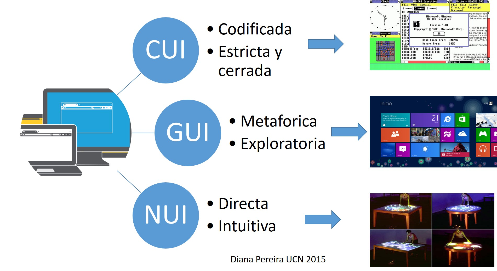

INTERFAZ DE USUARIO E INTERACCIÓN HUMANO
ORDENADOR

Diana Pereira UCN2015
¿Por qué es importante estudiar la interfaz de usuario?
Para conseguir esta interacción o diálogo entre persona-ordenador se utiliza la interfaz. Esta interfaz de usuario
determina, en gran medida, la percepción que el usuario tendrá de una aplicación y es un factor de gran importancia
para conseguir una aplicación exitosa.
Fuentes de informacion:
Interfaz del usuario:suasteguihern, A. & ez. (2019, marzo 29). Interfaz de usuario. Escuela ESP.
Interacción persona-ordenador (IPO)Interacción persona-ordenador (IPO). (2019, agosto 2). Eniun.
Realizado por: Deisy Yohana Perez Martinez